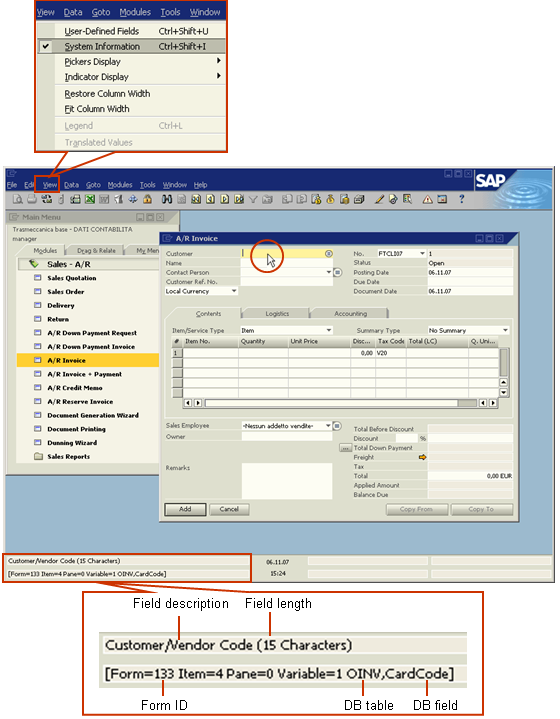
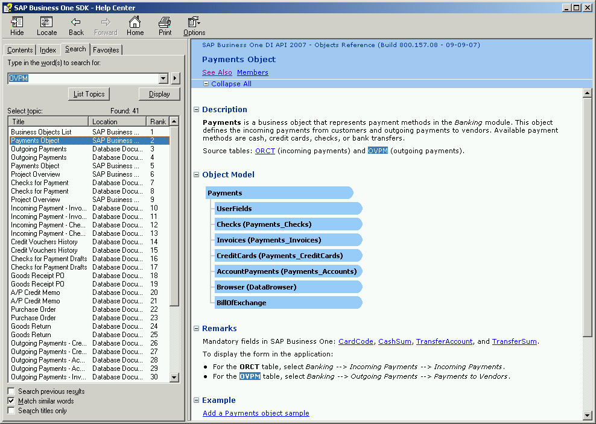

SAP Business One SDK 10.0 - Database Tables Reference |
|
This document provides a reference to the database tables in SAP Business One.
Each table provides a list of all the fields in the table, along with description, type, size, related tables, default value, and constraints.
The Contents tab on the left pane presents the tables alphabetically by description, grouped by SAP Business One module.
System information includes information related to the database, such as, table name, field name, and form ID.
To display system information:
From the View menu, select System Information.
Move the cursor over a field or form, and view information in the status bar.

Tip: To locate a table by its database name and display all its related tables and DI object, use the Search tab on the left pane.

Last updated: 2025-10-21